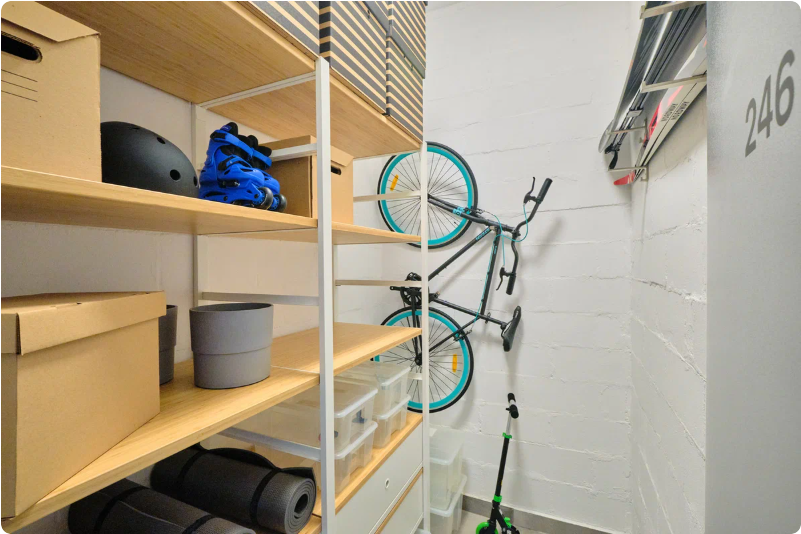

1. В квартире пространства хватит всем: вам, ребенку и его игрушкам
На Новый год обязательный пункт — поставить большую елку. А еще где-то детям нужно играть в догонялки, а гостям разместиться за праздничным столом. Что это значит? Да, нужно много места там, где собирается вся семья. В квартирах жилого комплекса «Квартал Ивакино» это продумали — посмотрите, какие просторные гостиные ждут новых жителей. 👇
Чтобы для каждой игрушки, чемодана и техники нашлось свое место, лучше сразу выбирать квартиру с дополнительными зонами для хранения. В квартирах жилого комплекса «Квартал Ивакино» предусмотрели для этого отдельные кладовые помещения. Смотрите, как они выглядят на планировках. 👇
Хотите детали?
Выберите интересующий вид планировки, чтобы узнать подробнее:
2. Гулять удобно и безопасно каждому: и
мамам с колясками, и подросшим детям
Коляска, самокат, велосипед — все это нужно куда-то заносить и где-то хранить после каждой прогулки. Из подходящих мест в квартире только балкон, но и он не очень выручает: не каждая коляска в него помещается, да и пока все туда отнесешь — остается много пыли.
В жилом комплексе «Квартал Ивакино» такой проблемы просто не будет, потому что в каждом доме предусмотрены специальные помещения для хранения колясок, велосипедов и самокатов. Спускаетесь на первый этаж, забираете свои вещи и гуляете, а по возвращении просто ставите туда же.

Удобные помещения для хранения и безопасная территория делают прогулку в «Квартале Ивакино» комфортной. Двор закрыт от машин, на каждом доме есть видеонаблюдение — посторонних просто не будет. Поэтому сможете спокойно отпускать детей на прогулки.
3. Дойти до природы за несколько минут: есть своя набережная у реки и парки неподалеку
Природа рядом с домом — почти жизненная необходимость. Взрослым она помогает восстановиться от рабочих будней, а детям дает простор для исследования мира. При строительстве жилого комплекса «Квартал Ивакино» это учли — вот какие зеленые зоны жители смогут найти поблизости:
🌳 Ландшафтные зоны с диким озеленением. Придомовая территория наполнена природой: цветами, дикими растениями и дорожками, вымощенными камнями. Возвращаешься после напряженного рабочего дня в городе, попадаешь в эти оазисы и расслабляешься. 👇
🌳 Живописная местность вокруг: река Клязьма, канал имени Москвы, парк Куркино. И до всего этого можно дойти пешком. Особенно — летом: прогулялся вечером по собственной набережной, встретил с семьей закат, а в выходные устроил пикник прямо у воды.
4. Устраивайте мини-приключения каждые выходные: вокруг много мест для активного отдыха
В выходные хочется новых впечатлений: съездить с детьми в маленькое путешествие или приобщить их к спорту на природе. В жилом комплексе «Квартал Ивакино» все это доступно. Расскажем, куда можно отправиться:
— Конный клуб. Дорога до него займет меньше часа. Здесь вы научите ребенка общению с животными и освоите верховую езду.
Конный спорт поможет укрепить организм и стать сильнее
— Яхт-клуб. Ехать до него не больше 40 минут. Отличный вариант для любителей романтики. В клубе можно остановиться в мини-отеле с номерами у воды и безмятежно отдыхать на живописном берегу Клязьминского водохранилища.
Устроить путешествие по воде могут не только профессионалы, но и любители. Достаточно арендовать яхту, и вот вы уже с семьей плывете по реке и смотрите на свой дом с совершенно другого ракурса
— Усадьба Мысово. Добираться до нее 20 минут на автомобиле. Здесь можно поплавать в бассейне, покататься на велосипедах в парке, поиграть в футбол на оборудованном поле или просто позагорать с детьми на пляже.
Усадьба Мысово стоит на берегу водохранилища. В парке есть дорожки для прогулок с коляской, детская и спортивные площадки, лавочки
— Котовский залив. Дорога до него займет 10-15 минут на автомобиле. В спортивной школе на Котовском заливе можно брать уроки парусного спорта или кататься на непотопляемых sub-досках, наслаждаясь теплой погодой.
Стоит учесть, что для водных прогулок на sup-досках есть возрастное ограничение: покататься вместе можно с детьми от 9 лет
5. Можно сэкономить при покупке: ипотека
со сниженной ставкой
В 2022 году в России продлили «Семейную ипотеку» — программу с господдержкой, благодаря которой можно приобрести квартиру в ипотеку под низкий процент. Жилой комплекс «Квартал Ивакино» попадает под госпрограмму, поэтому квартиры в нем можно приобрести со ставкой от 3,9%.
Есть и другой способ сэкономить: у девелопера «Самолет» есть Можнотека, которая позволяет включить в ипотеку стоимость полного обустройства квартиры. Так, к вашему заезду установят кухонный гарнитур и систему кондиционирования, обставят комнаты мебелью и добавят декор. Вам достаточно только выбрать стиль: классический, современный, лофт или скандинавский.
Заинтересовались?